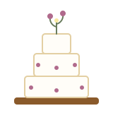

Weddings at the Bakehouse Loft
A working barn, a long table, and cake from the oven downstairs.
The Venue

The Bakehouse Loft is a restored timber barn set behind the bakery, ringed by orchard rows and meadow. Ceremonies happen under the apple trees or on the covered patio; supper happens under the rafters at long maple tables we built ourselves. String lights, a woodstove, and the smell of bread from the ovens below do most of the decorating for you.
The Loft seats up to 140 for a plated supper, or hosts up to 120 for dinner and dancing with the floor cleared. Smaller parties gather at a single long table by the woodstove — many couples tell us that is the best seat in the valley.
What a Weekend Includes
- The Loft and grounds — the barn, covered patio, orchard rows, and meadow, yours from Friday afternoon through Sunday morning.
- Supper from the bakery kitchen — a set menu planned with Rosa around what the valley farms bring in, with bread baked the morning of your wedding.
- Cake by Maren — tiered and finished with wildflower sprigs from the meadow, or a dessert table of galettes and cinnamon knots if cake is not your style.
- Tables, benches, and stoneware — the long maple tables, mismatched stoneware, and linen runners are all included; bring only what makes the day yours.
- A crew that runs the room — Theo manages the weekend from first walkthrough to last lantern out, so your people can stay at the table.
Micro-Wedding Weekends
In the quieter months the Loft hosts micro-weddings of up to thirty guests: one long table, the woodstove going, supper and cake from the kitchen downstairs, and the whole barn glowing against the snow. These weekends book simply and cost a fraction of a full-summer Saturday — ask us about open dates.
“We were married under the apple trees and ate supper at one long table while the bread was still warm. Our guests still talk about the woodstove, the lanterns, and Maren's cake.” — Nora & Sam, married in the Loft
Walk the Barn With Us
The best way to plan a wedding here is to stand in the Loft and picture it. Come for a walkthrough — we will put the coffee on.
Inquire About a Date